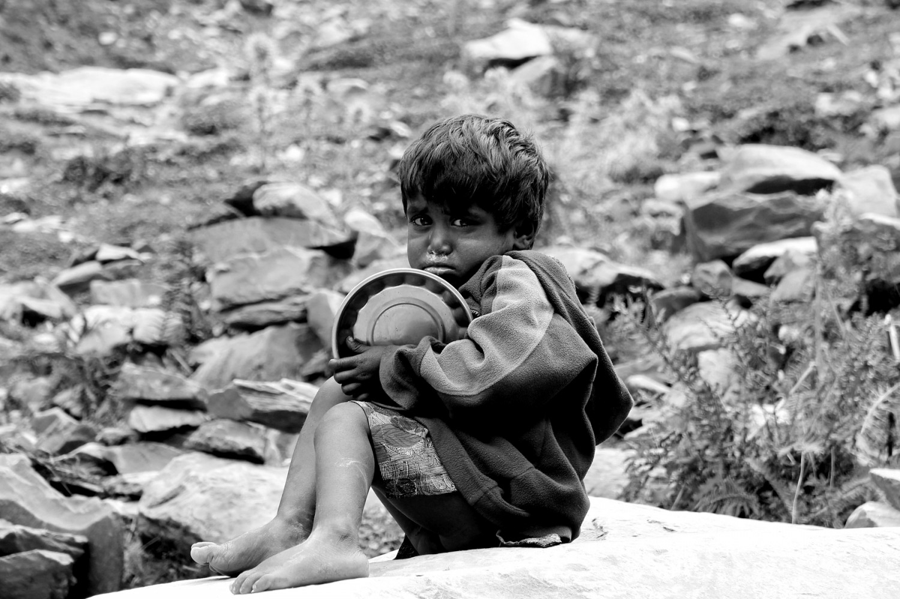
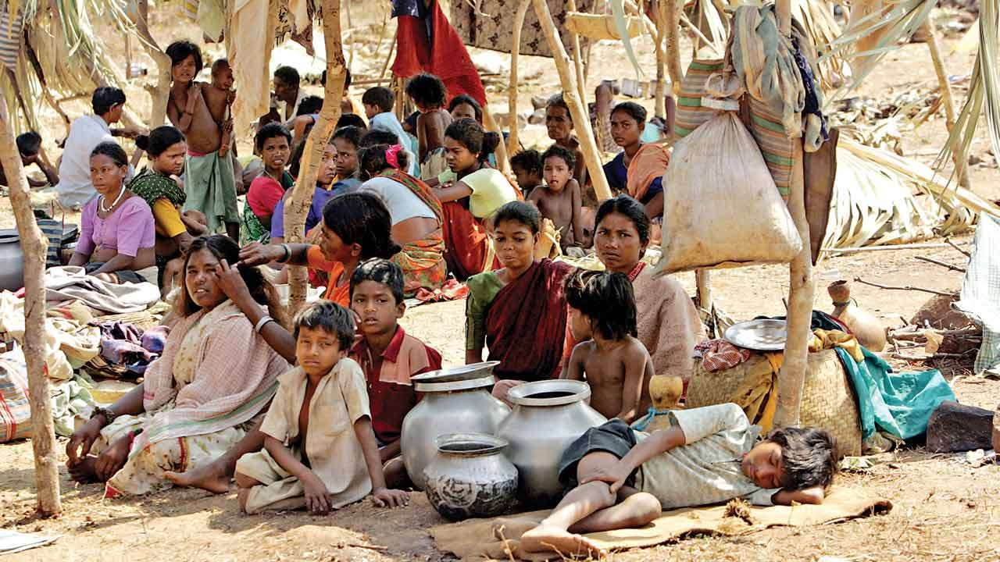
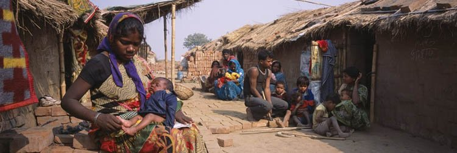

Clearly if we see report of WIKIPEDIA about poverty, we will realise real difference :

As India is one of the fastest-growing economies in 2020, poverty is on the decline in the country, with close to 44 Indians escaping extreme poverty every minute, as per the World Poverty Clock. India has been able to lift a significant percentage of its population out of poverty, but many still live in it. India had 73 million people living in extreme poverty which makes up 5.5% of its total population, according to the Brookings report. In May 2012, the World Bank reviewed and proposed revisions to their poverty calculation methodology and purchasing power parity basis for measuring poverty worldwide.[1] It was a minimal 3.6% in terms of percentage. As of 2020, the incidence of multidimensional poverty has significantly reduced, declining from 54.7 percent to 6 percent.[2]
India Poverty rate since 1993 based on World Bank $2.00 ppp value
According to United Nations Development Programme Administrator Achim Steiner, India lifted 271 million people out of poverty in a 10-year time period from 2005/06 to 2015/16.[2]
The World Bank has been revising its definition and benchmarks to measure poverty since 1990, with a $2 per day income on purchasing power parity basis as the definition in use from 2005 to 2013.[3] Some semi-economic and non-economic indices have also been proposed to measure poverty in India. For example, in order to determine if a person is poor or not, the Multi-dimensional Poverty Index places a 33% weight on the number of years that person spent in school or engaged in education and a 6.25% weight on the financial condition of that person.[4]
From the late 19th century through the early 20th century, under British colonial rule, poverty in India intensified, peaking in the 1920s.[9][10] Famines and diseases killed millions each time.[11][12] After India gained its independence in 1947, mass deaths from famines were prevented.[citation needed] Since 1991, rapid economic growth has led to a sharp reduction in extreme poverty in India.[13][14] However, those above the poverty line live a fragile economic life.[15]
As per the methodology of the Suresh Tendulkar Committee report, the population below the poverty line in India was 354 million (29.6% of the population) in 2009-2010 and was 269 million (21.9% of the population) in 2011–2012.[citation needed] In 2014, the Rangarajan Committee said that the population below the poverty line was 454 million (38.2% of the population) in 2009-2010 and was 363 million (29.5% of the population) in 2011–2012.[16] Deutsche Bank Research estimated that there are nearly 300 million people who are in the middle class.[17] If these previous trends continue, India's share of world GDP will significantly increase from 7.3% in 2016 to 8.5% by 2020.[18] In 2012, around 170 million people, or 12.4% of India's population, lived in poverty (defined as $1.90 (Rs 123.5)), an improvement from 29.8% of India's population in 2009.[19][20] In their paper, economists Sandhya Krishnan and Neeraj Hatekar conclude that 600 million people, or more than half of India's population, belong to the middle class.[21]
As reports given by the most famous news paper DNA of 2019 can open our eyes:

Over 270 million people in India moved out of poverty in the decade since 2005-06 and the poverty rate in the country nearly halved over the 10-year period, a promising sign that poverty is being tackled globally, according to latest estimates released Thursday.
The 2018 global Multidimensional Poverty Index (MPI) released by the United Nations Development Programme (UNDP) and the Oxford Poverty and Human Development Initiative (OPHI) said that about 1.3 billion people live in multidimensional poverty globally.
This is almost a quarter of the population of the 104 countries for which the 2018 MPI is calculated. Of these 1.3 billion, almost half - 46 per cent - are thought to be living in severe poverty and are deprived in at least half of the dimensions covered in the MPI, it said.
While there is much that needs to be done to tackle poverty globally, there are "promising signs that such poverty can be - and is being - tackled." The Index noted that in India, 271 million people moved out of poverty between 2005/06 and 2015/16. The poverty rate in the country has nearly halved, falling from 55 per cent to 28 per cent over the ten-year period.
India is the first country for which progress over time has been estimated."Although the level of poverty particularly in children is staggering so is the progress that can be made in tackling it. In India alone some 271 million have escaped multidimensional poverty in just ten years," UNDP Administrator Achim Steiner said.
"The Multidimensional Poverty Index gives insights that are vital for understanding the many ways in which people experience poverty, and it provides a new perspective on the scale and nature of global poverty while reminding us that eliminating it in all its forms is far from impossible," he said.
Although similar comparisons over time have not yet been calculated for other countries, the latest information from UNDP's Human Development Index shows significant development progress in all regions, including many Sub-Saharan African countries.
Between 2006 and 2017, the life expectancy increased over seven years in Sub-Saharan Africa and by almost four years in South Asia, and enrollment rates in primary education are up to 100 per cent.
This bodes well for improvements in multidimensional poverty.
The estimates further showed that half of all people living in poverty are younger than 18 years old. The new figures show that in 104 primarily low and middle-income countries, 662 million children are considered multidimensionally poor.
In 35 countries half of all children are poor. The MPI looks beyond income to understand how people experience poverty in multiple and simultaneous ways.
It identifies how people are being left behind across three key dimensions: health, education and living standards, lacking such things as clean water, sanitation, adequate nutrition or primary education.
Those who are deprived in at least of a third of the MPI's components are defined as multidimensionally poor.

The 2018 figures, which are now closely aligned with the Sustainable Development Goals, cover almost three-quarters of the world's population.
Multidimensional poverty is found in all developing regions of the world, but it is particularly acute and significant in Sub-Saharan Africa and South Asia.